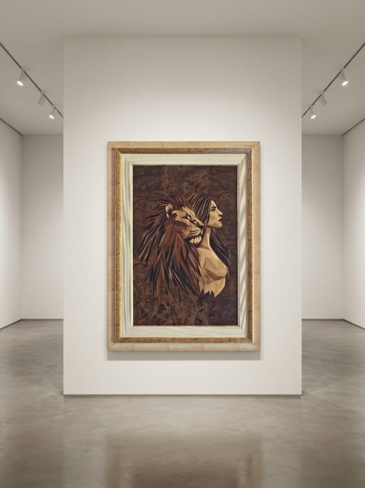

Come Conservare un Intarsio

Un intarsio è fatto di legno naturale, rifinito e protetto, e con un po’ di attenzione durerà per generazioni. Il legno però è un materiale vivo: reagisce alla luce, al calore e all’umidità. Ecco le poche abitudini che lo mantengono al meglio.
1. Attenzione alla luce
La luce è l’influenza più lenta ma più certa sul legno. Con gli anni i raggi ultravioletti cambiano il colore di quasi tutte le essenze: alcune scuriscono e si scaldano, come il ciliegio; altre schiariscono, come può fare il noce; i legni più vivaci si attenuano lentamente verso il bruno. In un intarsio, dove l’immagine vive del contrasto tra i legni, l’obiettivo è rendere questi cambiamenti lenti e uniformi.
- Appendi l’opera dove la luce diretta del sole non la colpisce mai, nemmeno per un’ora al giorno.
- Preferisci l’illuminazione LED, che emette pochissimi ultravioletti e poco calore. Tieni le lampade da quadro a una distanza rispettosa.
- Se una stanza è molto luminosa, valuta una pellicola anti-UV sui vetri: protegge anche tutto il resto.
2. Un’aria stabile
Il legno assorbe e cede umidità all’aria che lo circonda, gonfiandosi e ritirandosi leggermente. Sono i cambiamenti improvvisi o estremi a sollecitare impiallacciatura e colla.
- L’ideale è un’umidità relativa stabile, all’incirca tra il 40% e il 60%: quella che la maggior parte delle case ha già.
- Non appendere l’opera sopra un termosifone o un camino, accanto a una bocchetta del condizionatore, in bagno o in cucina.
- Le pareti interne sono preferibili a quelle perimetrali fredde, che possono essere umide dietro la cornice.
3. Pulire con delicatezza, e di rado
La superficie è protetta, quindi richiede pochissimo.
- Spolvera con un panno in microfibra morbido e asciutto o un pennello morbido, seguendo la venatura.
- Non usare mai acqua, spray, cera per mobili, prodotti al silicone o detergenti per vetri sulla superficie.
- Se si versa qualcosa, tampona subito con un panno asciutto senza strofinare.
4. Appenderlo in sicurezza
Usa ganci o tasselli adatti al peso dell’opera incorniciata, meglio due punti di appoggio che uno, così resta in bolla. Appendila all’altezza degli occhi e, se possibile, dove la luce sfiora la superficie di lato: fa risaltare la venatura e i lievi cambi di trama tra un legno e l’altro.

5. Trasportarlo e riporlo
- Se puoi, conserva la cassa originale: è il modo più sicuro per spostare l’opera.
- Trasportala in verticale, tenendola per la cornice con due mani.
- Se va riposta, scegli una stanza asciutta e a temperatura stabile, mai garage, soffitta o cantina, e tienila in verticale, non distesa sotto altri oggetti.
Se succede qualcosa
Se un pezzo di impiallacciatura si solleva, compare una crepa o la superficie si danneggia, non incollare né lucidare da solo. Conserva l’eventuale pezzo staccato e contatta lo studio: descrivi che cosa è successo e invia una fotografia, e ti consiglieremo il modo giusto per restaurarlo.
Con queste piccole attenzioni un ritratto in intarsio non si limita a durare. Matura, come fa il buon legno, e con il tempo diventa ancora più bello.